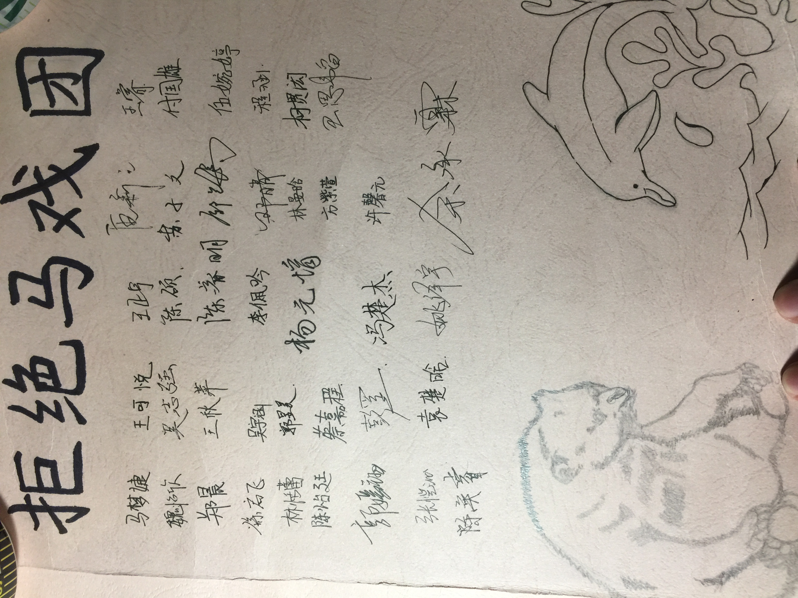

Animal Protection Association
Overview
From my perspective, animals should be treated ethically.
Not being an extreme activist, I focus my work on boycotting animal circuses. I was elected the president of our school's Animal Protection Association in 2016. Then, I lead a team of 15 students to initiate the "Not Born to Perform" campaign to stop animal acrobatics.
Throughout our campaign, I organized charity sales and class presentations. At the peak of our campaign, we argued with local government representatives to stop school trips to a local animal circus and we held charity show at 4 different public areas in my city at the same time with over 120 student volunteers, donating all the money we raised to PETA Hong Kong.
This is our story:
 |
| "I promise I will never visit animal circuses." |
Phase 1: In Classrooms
It is my firm belief that people's joy should not be based on animals' suffering. Thus, I was never fond of the idea of animal acrobatics. So I felt very uncomfortable when I learned my local government decided to invest 100 million RMB (15 million USD) in building the largest animal circus in the world at my city, the "Ling Ling International Circus City" (厦门灵玲国际马戏城).
The decision has already been made by the government. Since demonstrations and appeals were not an option in my city, I focused on dissuading the public to visit. The easiest group of people I could reach was my schoolmates.
As a result, I wrote a speech and trained my teammates at the APA how to present. Then we talked to the school officials and presented our speed at each classroom. In the end, we received more than 100 signatures from students who vowed they would never visit animal circuses.
|  |
| Signatures from students |
Phase 2: On Campus
A few months after our initial campaign, our local government's education department decided to make Ling Ling circus as the destination of many public school's school trip.
Saying we were not happy would be an understatement. We were furious.
I split my team into two groups. One group focus on reaching out to school and government officials to try to change the destination. But we knew the chance was slim since the local government was one of the investors of the circus. The other group focused on campus-wide charity sales to raise awareness.
We designed many merchandises and sold them at our on-campus charity sale. And we went back to the classroom again to pitch our idea and dissuade students from participating. But since there were only 2 school trips in our 3 years in high school, it was hard to dissuade students. Thus, I reframed the talk from "No Circus" to "My Last Trip to Circus". We asked students to think what how do they feel if they were the animals and ask them to make this their first and final trip to animal circuses.

{kind=link}
{kind=link}
{kind=link}
Phase 3: In Society
Sadly, we did not manage to change the destination for our school trip. Many people, including myself, ended up going to the circus. This should be the end of our campaign, but, as you may have known, giving up is never an option for me. I wanted to raise more people's awareness.
During that time, I was also one of the chief organizers of the 2017 Amoy Youth Elite Summit. Bridging the gap between different organizations have always been my thing. Thus, I wanted to motivate the participants of the Summit to help us with our campaign.
During the summit, I gave 50 RMB(7.4 USD) to each team as their initial fund. Each team has 3 days to plan out an executable plan to advocate for the rejecting animal circuses. And they would act out their plan on the fourth day. The participation was, of course, voluntary.
This was like a little experiment because I had no idea what they can come up within 3 days and how many people will even show up. But it turned out to be a great success. On the day of the event, about 120 students joined our event as organizers. We held charity sales and charity shows at a shopping district(ZhongShang Road), a shopping mall(SM), a public park (WuYi Square) and our school at the same time.
In the end, we educated many pedestrians and received more than 500 signatures. We raised about 3600 RMB in four hours. And the budget for the whole event was only 550 RMB.
 |
 |
 |
 |
 |
 |